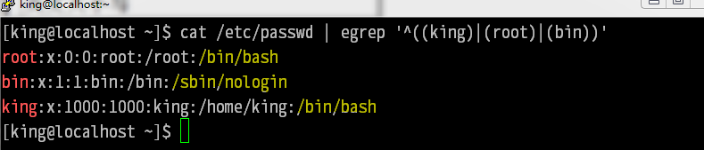
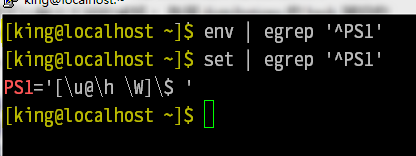

bash
bash 為 Bourne SHell 的後繼兼容與開源版本 是大多linux 的默認shell /etc/shells 檔案記錄了 所有支持的shell /etc/passwd 檔案 記錄 記錄了 對應 用戶 使用的 shell 
常用
//將命令轉行 書寫 \[Enter] //顯示 命令執行 返回碼 0(通常為成功) echo $? //顯示 當前 進程 pid echo $$ //停止 執行 [ctrl] + c //暫停 當前程式 並將其切到 後台 [ctrl] + z //依次執行 多條命令 cmd1;cmd2;cmd3 ... //$? 為 0 才執行下個 命令 cmd1 && cmd2 && cmd3 ... //$? 不為 0 才執行下個 命令 cmd1 || cmd2 || cmd3 ... //在 後台 運行 命令 cmd & //執行命令 並且在 登出用戶後 依然繼續執行 nohup cmd [&] //查看 命令 類型 type cmd -t 僅以 file(外部命令) alias(別名) builtin(bash內置) 等字符顯示 類型 -p 類型為 外部命令 時才顯示 完整檔案名 -a 將 所有 cmd 都找出來
bash 執行路徑
1 絕對/相對 路徑 2 alias 3 bash內置 4 $PATH 變量
變量
//顯示 變量PATH 的值 echo $PATH //設置變量 myvar myvar="this is a test" //取消 變量 unset myvar
變量 規則
1 變量 與 值 用 = 連接 2 = 兩邊 不能直接出現 空格 需要使用 " 或 ' 3 變量名 只能是 英文 數字 且不用以 數字 開頭 4 " 內 $ 等 特殊符號 保存其 原本 特性 ' 內 一切皆為 字符串 ( //同 echo $PATH ehco "$PATH" //顯示 字符串 $PATH echo '$PATH' //將 ~/bin 增加到 $PATH PATH=$PATH:~/bin ） 5 ` 或 $() 內為命令結果 echo `uname -r` echo $(uname -r) 6 使用 export 前綴 導入為 環境變量 7 環境變量 一般使用 全大寫名稱 自定義使用小寫
注意
自定義 變量 不會被引入到 新的 子 shell 中 只有 環境變量(export MYVAR="env var test") 才會被 子 shell 繼承
環境變量
//設置環境變量 export GOROOT=/opt/go ( GOROOT=/opt/go export GOROOT ) //查看所有 環境變量 env export //查看 當前 shell 所有相關 變量(包括 自定義) set
env 常見 環境變量
HOME 當前用戶 home 目錄 SHELL ...使用的 SHELL HISTSIZE ...記錄命令 數量 MAIL mail 命令讀取 檔案 路徑 PATH 可執行檔案 查找路徑 LANG 語系 RANDOM [0,32767] 的一個偽隨機 值 ...
set 常見 shell變量
HISTFILE 當前shell 命令記錄 檔案路徑 MAILCHECK 多少秒 掃描一次 $MAIL PS1 命令提示字元 如何 顯示  \d 顯示出 星期 月 日 (如"Mon Feb 2") \H 顯示出 完整 主機名 $HOSTNAME \h ... 主機名 第一個 小數點前的 字符串 \t ... 24時間 HH:MM:SS \T ... 12... \A ... 24... HH:MM \@ ... 12... am/pm \u ... 目前 用戶名 \v ... bash 版本 \w ... 完整目錄名cd' \W ... 工作目錄 \# 執行的第 幾個 命令 \$ 為root 顯示 # 其他用戶顯示 $ 提示符 OSTYPE OSTYPE=linux-gnu HOSTTYPE HOSTTYPE=x86_64 MACHTYPE MACHTYPE=x86_64-redhat-linux-gnu